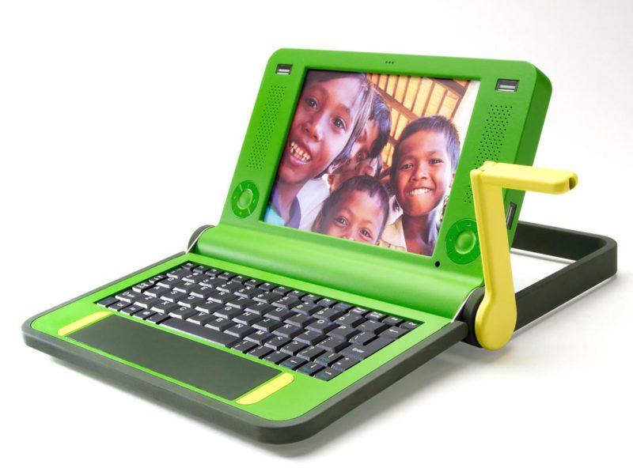

Have you ever wondered why your laptop, phone and gadgets become out of date so quickly? Has it ever frustrated you that mobile devices seem so tricky to repair? How can it be right that only 12% of phones are traded in or reused when users upgrade? What is the effect on our environment?

Cranking a sustainable laptop
The keywords here are “Planned Obsolescence”, where companies build in the fragility and short software and service life-cycle of our products. This guardian article on planned obsolescence talks with Rachel Botsman and explores how the tech giants can get away with it.
Make or Break device repair events
Dr Chris Porter and EdLab are running a series of events that explore this topic on this project. He is looking for student volunteers to help run these sessions. Specifically we are looking for volunteers:
- host events by welcoming attendees
- create supporting publicity
- make educational resources on this subject
More information
This issue brings many issues together. Planned obsolescence has been seen as a side effect of a market where consumers have little power and are persuaded to place a high value on new products. When material is so hard to recycle, there is little incentive to be sustainable. How can this be increased?
Beyond the response of individual consumers there are more industry led initiatives which offer hope. These include Frugal Innovation and Circular Economy. Miles Park brings these elements of consumer response and design together here.
The subject matter of electronic waste forms a part of the GCSE Computing and Geography curriculum and there are resources which may be adapted to create your own resources for this age range.


{kind=link}
{kind=link}
{kind=link}
{kind=link}
{kind=link}
{kind=link}